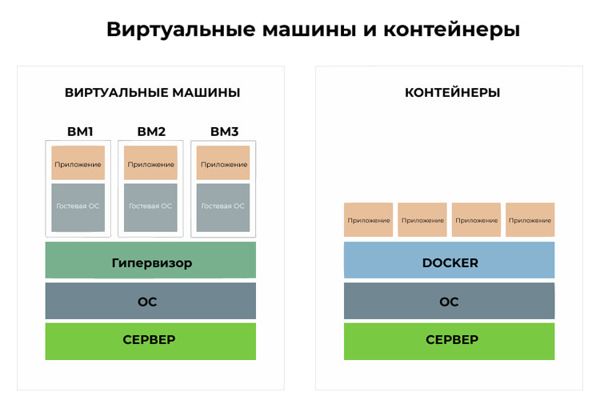
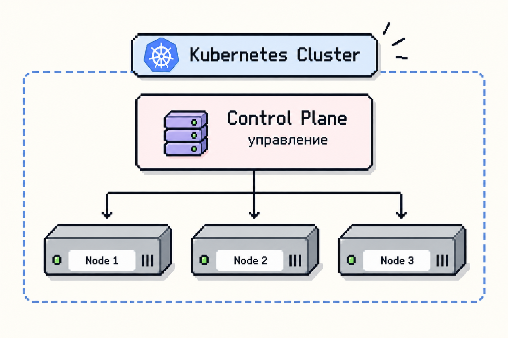
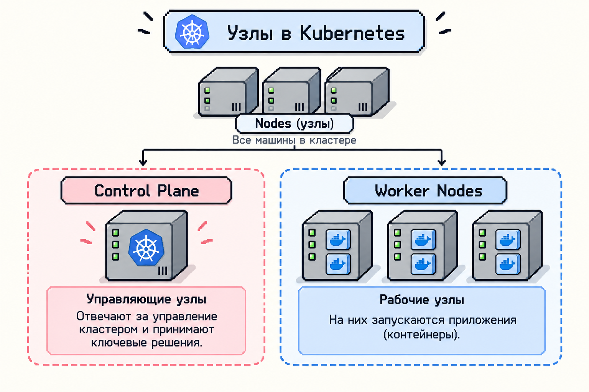
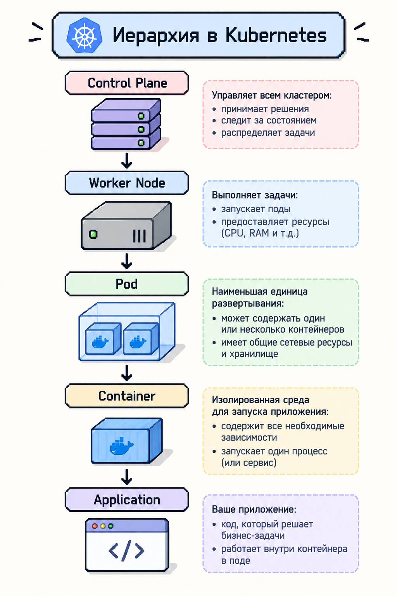
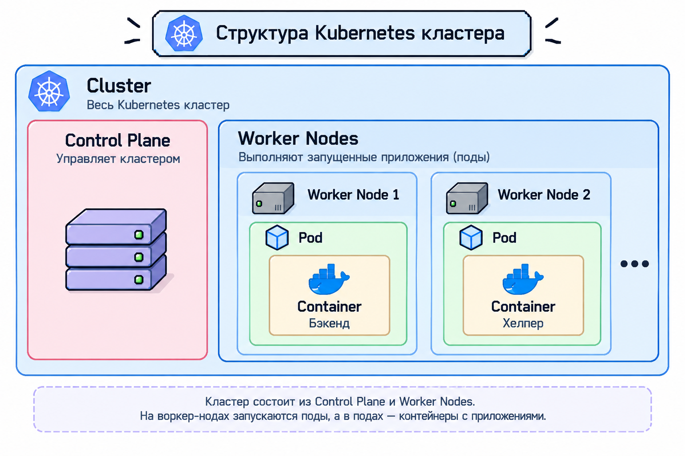
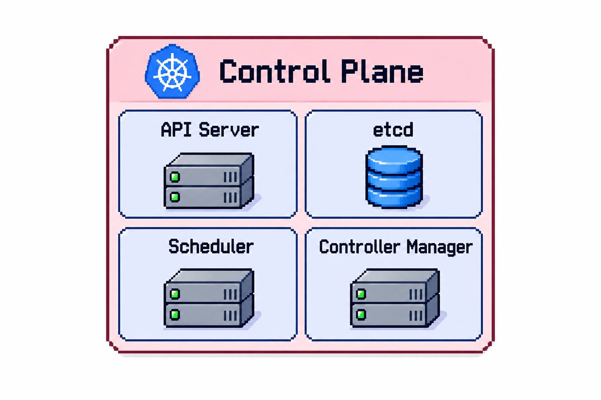
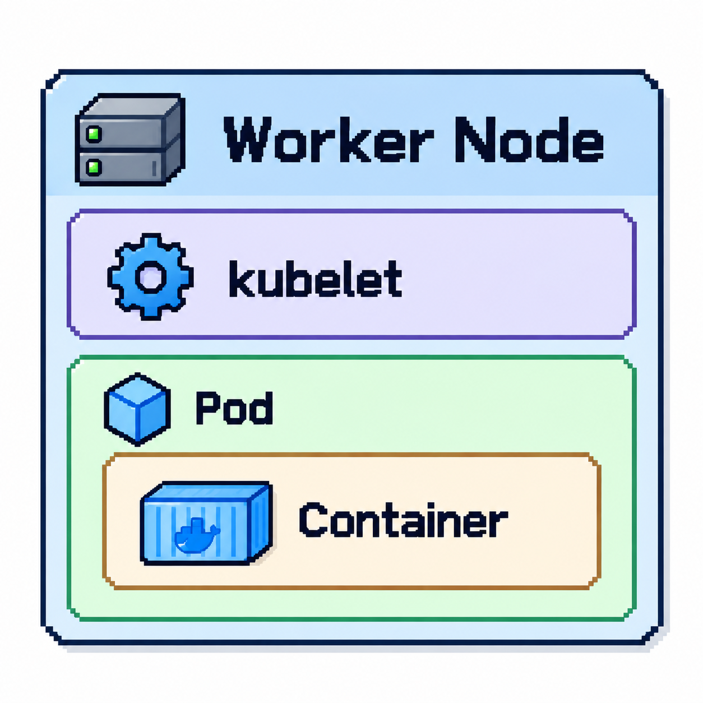
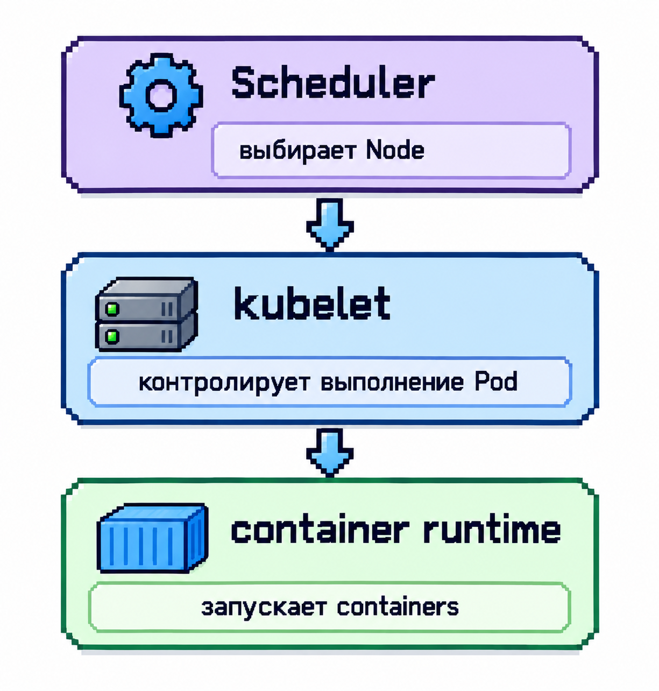
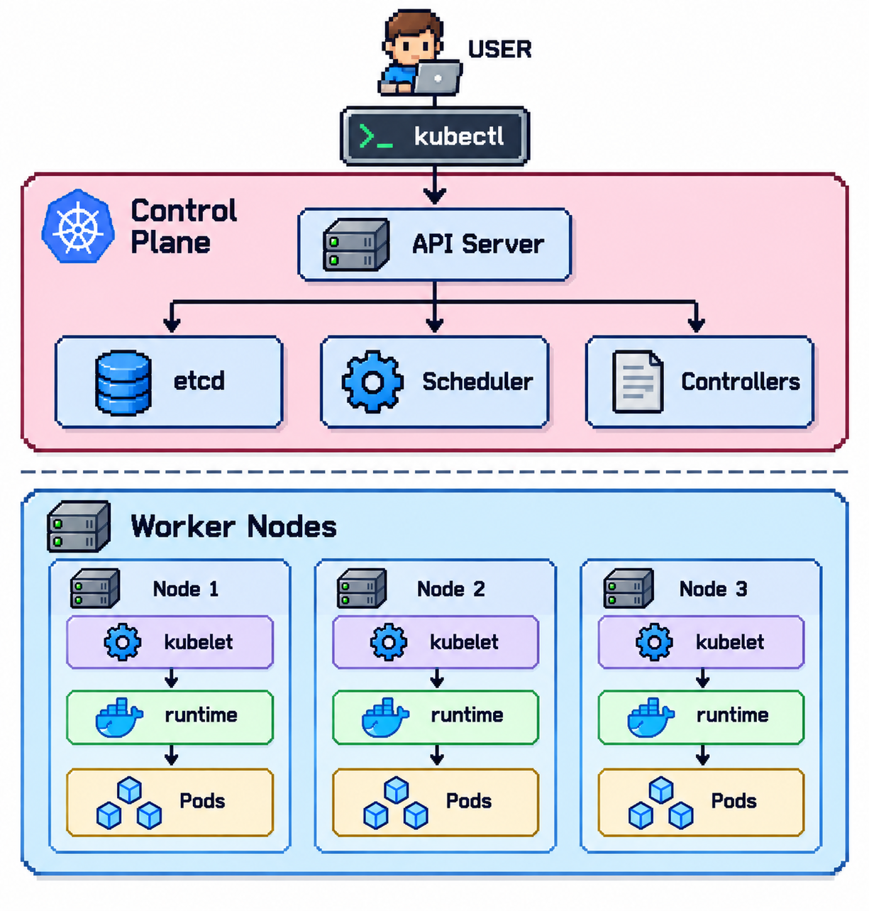
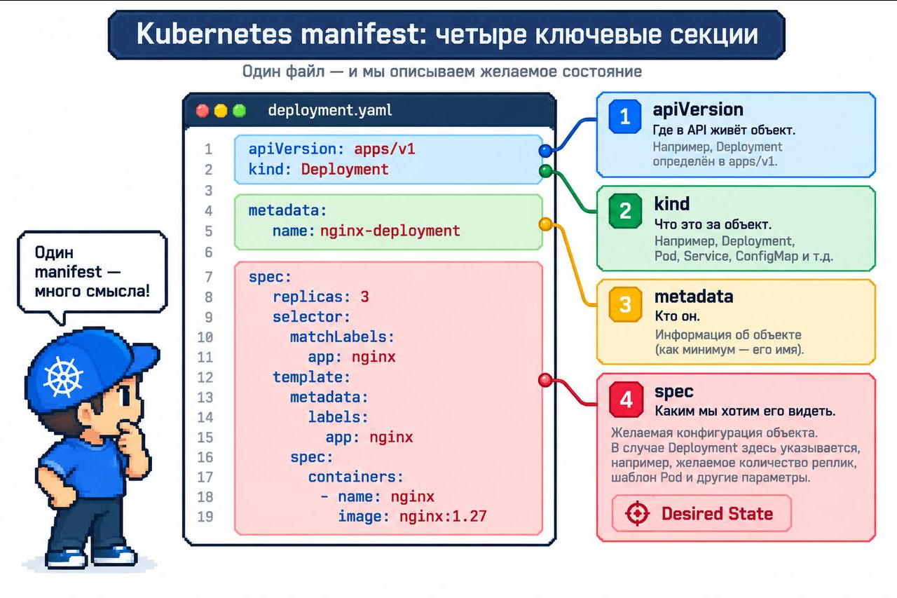

Данный проект помогает разобраться с устройством Kubernetes(K8s), для новичка и научиться с ним работать
1. Часть первая «Docker»
При разработке приложений часто возникает одна и та же проблема: у каждого разработчика своё окружение.
Разные версии библиотек, интерпретаторов, системных зависимостей.
В результате код, который стабильно работает на одном компьютере, может не запуститься на другом.
Docker решает эту проблему — он создаёт единый и воспроизводимый способ запускать приложения.
Основная идея: Docker — это платформа контейнеризации.
Она позволяет упаковать приложение вместе со всеми зависимостями в изолированную среду — контейнер.
Такой контейнер можно запустить где угодно: на локальной машине, сервере или в облаке, и результат всегда будет одинаковым.
Главное отличие Docker от виртуальных машин заключается в том, что виртуальные машины эмулируют аппаратное обеспечение и запускают полноценную гостевую операционную систему, а Docker использует ядро хостовой ОС и изолирует только сами приложения.

Создание приложения
Для начала создадим простое приложение на языке программирования С++ и фреймворке Crow GitHub Crow.
Создайте папку app и в ней файл main.cpp:
#include <iostream>
#include <crow.h>
int main() {
crow::SimpleApp app;
CROW_ROUTE(app, "/")([](crow::response& res) {
res.set_static_file_info("app/site/index.html");
res.end();
});
app.port(8080).multithreaded().run();
return 0;
}В папке app создайте папку site с файлом index.html:
<!DOCTYPE html>
<html lang="en">
<head>
<meta charset="UTF-8">
<meta name="viewport" content="width=device-width, initial-scale=1.0">
<title>Test docker</title>
</head>
<body>
<h1>Simple docker</h1>
</body>
</html>Скачайте фреймворк Crow и скопируйте папку include/ в app/. Затем перейдите на уровень выше и создайте Makefile:
CC=g++
CFLAGS=-c -I"app/include"
SRC=app/main.cpp
OBJ:=$(SRC:.cpp=.o)
target: main
main: $(OBJ)
$(CC) $< -o $@
%.o: %.cpp
$(CC) $(CFLAGS) $< -o $@
clean:
rm app/*.o mainВ этой же папке создайте Dockerfile:
# Используем готовый образ Ubuntu
FROM ubuntu:latest
# Устанавливаем необходимые библиотеки
RUN apt-get update && apt-get install -y \
g++ \
make \
libboost-all-dev \
libasio-dev
# Копируем все файлы в контейнер
COPY . /app
# Задаем рабочий каталог для всех последующих команд
WORKDIR /app
# Сборка проекта
RUN make
# Запуск проекта
CMD [ "./main" ]Итоговая структура папок:
cuber/
├── app/
│ ├── include/
│ ├── site/
│ │ └── index.html
│ └── main.cpp
└── MakefileСборка контейнера
Соберите образ:
docker build -t crown_app .Запустите контейнер с пробросом портов (у контейнера своё сетевое пространство, поэтому нужен параметр -p):
docker run -p 8080:8080 crown_appПосле запуска приложение доступно по адресу http://localhost:8080
2. Часть 2. Kubernetes
Kubernetes - это система управления контейнеризированными приложениями на множестве машин, объединяющая их в единую систему - кластер.

Кластер состоит из машин под управлением Kubernetes. Каждая такая машина называется Node (нода/узел).
2.1 Node
Node - машина, входящая в Kubernetes-кластер. Нодой может быть физический сервер, виртуальная машина или облачный инстанс.
Узлы бывают двух ролей.

Control Plane — управляющая часть Kubernetes. Она не содержит контейнеры приложений, а управляет состоянием кластера. Здесь принимаются решения:
- какие объекты должны существовать;
- сколько экземпляров приложений должно быть запущено;
- на какой Node поставить новый под;
- нужно ли создавать новые поды;
- соответствует ли текущее состояние (actual state) желаемому (desired state).
Worker Node — машина, на которой непосредственно работают приложения


2.2 Control Plane

API Server - центральная точка взаимодействия с Kubernetes API. Через него пользователь создаёт объекты, компоненты Kubernetes читают и записывают состояние кластера, внешние инструменты взаимодействуют с Kubernetes.
etcd - распределённое key-value хранилище, в котором Kubernetes хранит состояние своего API. Практически все компоненты Control Plane работают с etcd, но не напрямую, а через API Server.
Scheduler - выбирает подходящую Node для размещения Pod, которому ещё не назначена машина. Важно: Scheduler не запускает контейнер, он лишь решает, где он будет запущен.
Controllers - постоянно наблюдают за состоянием кластера и замечают несоответствия между желаемым и действительным состоянием, предпринимая действия по их согласованию (reconciliation loop).
2.3 Worker Node

kubelet - агент Kubernetes, работающий на конкретной ноде. Он следит за тем, чтобы поды, назначенные для этой машины, были запущены и соответствовали своей спецификации.

Итоговая архитектура Kuber

Часть 3. Создание кластера с приложениями
| Инструмент | Зачем он нам |
|---|---|
| Docker | Позволит запустить учебную ноду в контейнере на нашем компьютере |
| kind | Создаст и настроит Kubernetes внутри этой ноды |
| kubectl | Позволит отправлять команды в Kubernetes |
3.1 Создание кластера
kind create cluster --name my-cluster --wait 180sЗдесь:
- create cluster - создать кластер;
- --name my-cluster - дать ему имя;
- --wait 180s - подождать готовности управляющих компонентов до трёх минут.
По умолчанию kind создаёт одну ноду. В маленьком учебном кластере одна нода может совмещать обе роли: на ней работают и управляющие компоненты, и наше приложение.
Установите активный контекст для kubectl:
kubectl config use-context my-clusterДля проверки связи используем команду:
kubectl cluster-infoВывод покажет адрес управляющей части кластера.
Полезные команды:
kubectl get nodes # список нод
kubectl get pods # список подов
kubectl run app --image=crown_app:latest # запуск подаЗдесь:
app- название пода--image=crown_app:latest- образ запускаемого контейнера
Удаление кластера:
kind delete cluster --name my-cluster3.2 Создание манифеста
Чтобы не вводить команды многократно, создайте файл с описанием всех требований — Kubernetes-манифест:
apiVersion: apps/v1
kind: Deployment
metadata:
name: my-app-deploy
spec:
replicas: 3
selector:
matchLabels:
app: my-app
template:
metadata:
labels:
app: my-app
spec:
containers:
- name: my-app
image: crown_app:latest
ports:
- containerPort: 8080В манифесте постоянно встречаются четыре поля:
apiVersionkindmetadataspec
apiVersion - показывает group/version, в котором определён объект. Например, Deployment определён в apps/v1, а Pod — просто в v1. Запоминать все версии не нужно, достаточно понимать назначение поля.
kind - отвечает на вопрос, какой Kubernetes-объект мы описываем: Pod, Deployment, Service, ConfigMap и т.д.
metadata - информация об объекте, например его имя:
metadata:
name: my-appDeployment — объект, который управляет репликами подов и обеспечивает их заданное количество
spec - желаемая конфигурация создаваемого объекта. Например, «я хочу три replicas (экземпляра)»:
spec:
replicas: 3
template
template - шаблон будущего пода. Он описывает, какие поды необходимо создать:
template:
metadata:
labels:
app: my-app
spec:
containers:
- name: my-app
image: crown_app:latest
ports:
- containerPort: 8080Внутри template.spec находятся контейнеры:
containers:
- name: my-app
image: crown_app:latestЭто читается так: в каждом созданном Pod должен работать контейнер с именем my-app, созданный на образе crown_app:latest. containers - список, поэтому перед контейнером стоит дефис. В одном поде может работать сразу несколько контейнеров — важная концепция, на которой строится множество паттернов распределённых приложений.
Конструкция selector.matchLabels используется для логического связывания компонентов кластера:
- В Deployment: указывает контроллеру, какими именно подами он должен управлять и сколько их реплик поддерживать в живых.
- В Service: указывает балансировщику трафика, на какие именно поды перенаправлять сетевые запросы.
Важно: Значение app: my-app в блоке selector.matchLabels должно строго совпадать с меткой (labels) в шаблоне пода (template.metadata.labels), иначе Kubernetes выдаст ошибку валидации.
Для загрузки манифеста выполните:
kubectl apply -f deployment.yaml4 Объекдинение и запуск приложения
Добавляем в Makefile следующие строки:
start-cluster:
@sudo kind create cluster --name my-cluster --wait 120s
# загрузка тяжелеого образа в кластер kind
@sudo kind load docker-image crown_app:latest --name my-cluster
@sudo kubectl apply -f app.yaml
@sudo kubectl rollout status deployment/my-app-deploy --timeout=90s # ожидание развертывания
@sudo kubectl port-forward deployment/my-app-deploy 8080:8080
stop-cluster:
@sudo kind delete cluster --name my-clusterДалее что бы запустить кластер с приложениями можно следующей командой:
sudo make start-clusterДля остановки:
sudo make stop-cluster